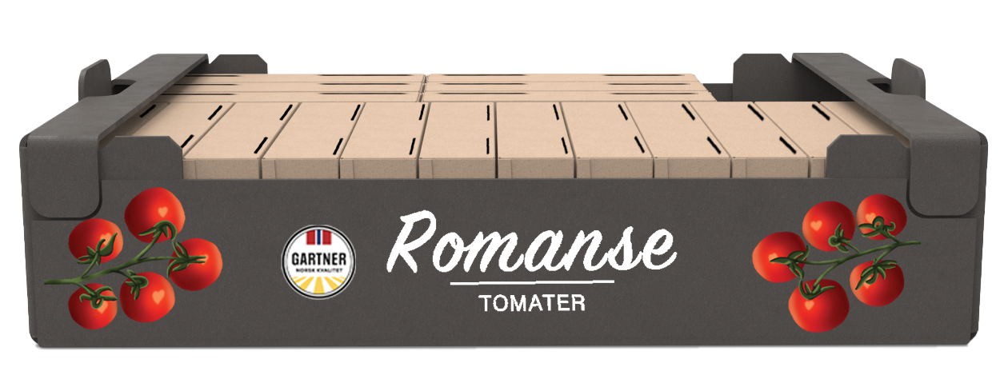
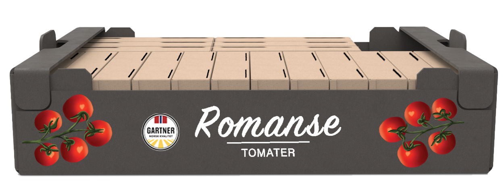

A more sustainable packaging for tomatoes
The goal with this project was to design a new and more sustainable packaging for “Romanse” tomatoes.
To start with, I explored several different solutions, but I ended up going back to the basics: a square box.
I made several mockups with different types of openings and different types of methods to put the box together.
Then I tested them out and ended up with a simple and effective solution.
For the graphic design I drew several options, printed them out and tested them on the box.
I ended up with a design that tells the end user what is inside and a design that can be scaled to different types of tomato packaging.
Today the tomatoes in the tray with plastic around are stacked ontop of eachother in the store. This leads to the tomatoes being smashed. There is nothing that protects the delicate tomatoes from the weight put on top of them.
There is a lot of color and flashy design on the products in the grocery store. To stand out from the other products a minimalistic design is preferable. Also use of the natural color of the carton is more frequently used and people perceive this as if the product is more “natural”.
Today packaging can be very hard to open for everyone.
It is important to be inclusive and therefore the packaging should be user friendly for everyone;
elders, children, people with disabilities and so on.
I, therefore, consulted with a nurse who works with patients with movement difficulties at St.Olavs,
and got feedback on my design along the way.
The most important elements I gathered from the insight to be used for a new design was:
In the front of the box the lid has the shape of a curve.
This is to have a visual indicator of where to open the box and to give easier access when opening it.
The curve also softens up the rigid, square, box to match the soft tomatoes.
The curve is repeated on the sides and in the windows on the top to make a coherent expression.
The lid of the box has a snug fit to secure it in place during transport, but it is not locked in place to make it easy to open. This decision was made because it is most important for it to be easy to open. A possible problem here is that one can not toss the packaging into the shopping cart/bag, but place it nicely, but this is also an issue with today's packaging where the tomatoes get squeezed.
The outside is a “natural” color to express that this is a healthy food and to differentiate the tomates from all the other colorful products in the store: it will stand out.
On the inside, the color is white. This is to let more light inside to show the tomatoes better through the windows.
The windows are placed in the corners to open up the box so it does not appear so compact. They allow the end customer to see and inspect the tomatoes when buying them.

 

The graphic design is simple, “romantic” and not overwhelming. It shows what is inside the packaging without the need to be up close to the product.
The typeface is soft, to continue the soft expression of the curves, and it has a romantic expression.
On the back is description information and a decription of what “Romanse” tomatoes are and how they can be used.
The graphic design is scalable to other tomato packaging with different dimensions and shape, as shown below.